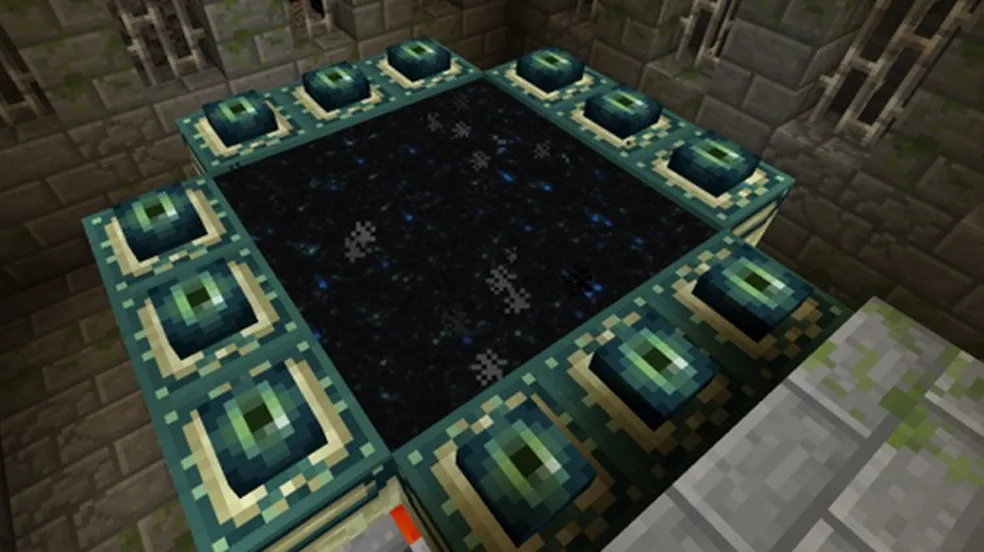
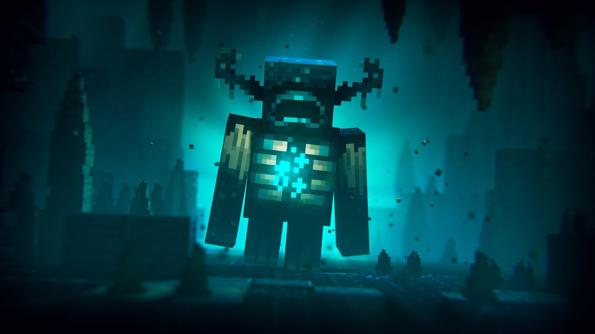

- A partir da camada -33 da versão mais recente(1.21), você terá grandes chances de encontrar diamantes. Para verificar sua camada, basta apertar a tecla F3 em seu teclado e ir em XYZ para verificar.
- Um portal do Nether é construído como um quadro de obsidiana (de 4 * 5 no mínimo e 23 * 23 no máximo). Os blocos dos cantos do quadro não são necessários, mas os portais criados pelo jogo sempre os inclui. A obsidiana pode ser colocada manualmente (minerando ela) ou criada ali (usando lava e água).
- É necessário possuir esferas de Enderman, arremessá-las para cima que lhe mostrarão o caminho até o portal, vale lembrar que olhos de Enderman são obtidos quando derrotamos as criaturas conhecidas como Enderman, encontradas normalmente quando o jogo anoitece e ou dentro do portal do Nether, encontrar o bioma deles e derrotá-los. Após isso é necessário ter 12 Olhos de Enderman para poder ativar e atravessar o portal.
- Essa coisa fofinha que está vendo, se chama 'Warden', ele fica hibernando em seu reino nas camadas mais profundas das cavernas e você não vai querer acordá-lo. Sim, ele é um dos MOB's mais fortes do game, em algumas ocasiões pode te dar apenas 1 hit e você vai de lalau, ele não vai parar enquanto não te destruir...
Como encontrar diamantes?

Como criar o portal do Nether?

Como encontrar o portal do fim?

Warden? corra ou morra!
